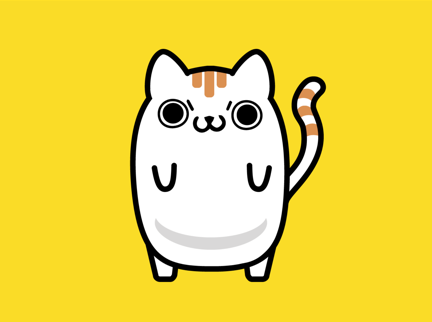
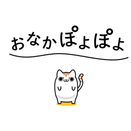
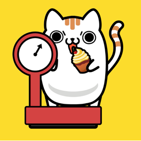

ONAKAPOYOPOYO
Graduation Project/
BYND
モーショングラフィックを映像専門スクールBYNDで学んだ時の卒業制作です。
当時おなかがぽよぽよしてきたので、オリジナルキャラクターのぽよねこで、ぽよぽよに対する焦りを可愛く表現しました。自然なアニメーションになるよう動きに気を使いました。

ぽよねこ
オリジナルキャラクター、意思の強い瞳を持つ白いねこ。おなかがぽよぽよしている。
強い意志を持つがダイエットに関しては強い意志は発揮されない。

始まった瞬間、おなかぽよぽよのテキストと共に誕生するぽよねこ

混乱と焦りがテキストアニメーションで表現される

三匹で息の合ったダンスを披露する